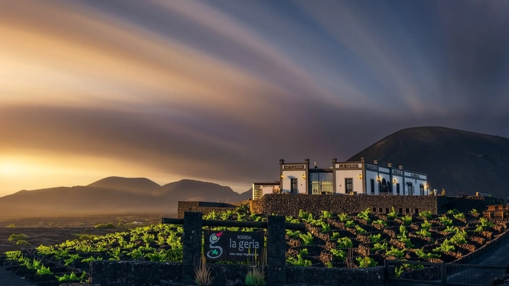

La Geria es un espacio protegido de Lanzarote conocido por su forma única de cultivar el vino. Está situado en la zona central de la isla, ocupando parte de los municipios de Yaiza, Tías, Tinajo, San Bartolomé y Teguise.
Es un valle cubierto por una gruesa capa de ceniza negra que dejó la erupción del Timanfaya.
Los agricultores cavan hoyos en la lava para llegar a la tierra fértil, plantar las parras y construyen muros de piedra para protegerlas del viento. El resultado es un paisaje increible.
Me encanta La Geria porque representa el esfuerzo y la resistencia del pueblo lanzaroteño.

Puedes consultar más detalles oficiales sobre este espacio protegido en la página de La Geria.
Para ver los horarios y detalles de las visitas, consulta los Horarios de la Bodega de La Geria.